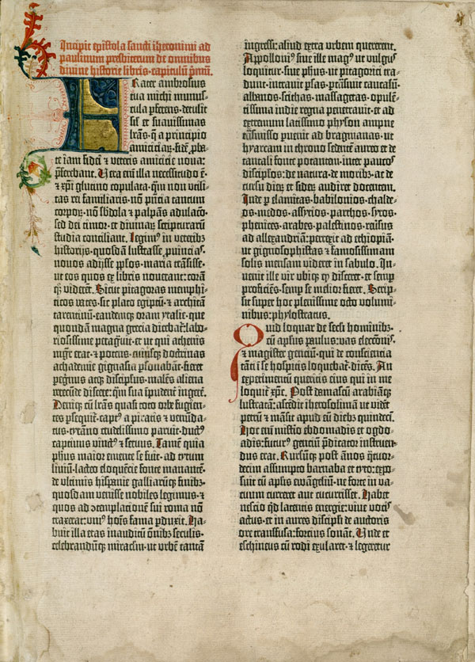

Послание Иеронима, открывающее Библию Гутенберга — первое печатное издание Вульгаты.
Вульга́та (лат. Biblia Vulgata — «Общепринятая Библия») — почётный титул, применяемый к латинскому переводу Священного Писания, восходящему к трудам блаженного Иеронима.К концу IV века возникла потребность в едином и достоверном тексте латинской Библии, на котором Западная церковь могла бы основывать своё учение. По словам Б. Мецгера, «разные версии были так перемешаны и искажены, что не нашлось бы и пары согласующихся друг с другом рукописей».
Переводческая деятельность Иеронима хорошо документирована им самим в переписке с другими учёными и богословами, значительная часть его посланий сохранилась и публикуется вместе с текстами Вульгаты. Именно в своих посланиях Иероним определил неканонические книги Ветхого Завета, имеющиеся в Септуагинте, но отсутствующие в Танахе, и характеризовал их как апокрифы.
С. Берже в 1893 году впервые ввёл классификацию рукописей Вульгаты, которых в общей сложности сохранилось около 10 тысяч.